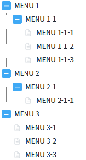
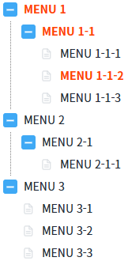
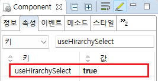

TreeView의 'useHirarchySelect' 속성을 사용하여 하위 노드를 선택할 때 상위 노드도 선택된 효과가 적용되도록 설정한 예제입니다.
이 기능은 상위 노드에 선택된 효과를 주는 것으로 TreeView의 'getSelectedLabel' 메소드를 이용해 선택된 Label을 확인하면 상위 노드는 제외된 것을 확인할 수 있습니다.
노드를 선택하면 상위 노드에 선택된 효과 주기
1
STEP 1: 초기 상태를 확인합니다.
TreeView에 선택된 노드가 없습니다.
Image 1.브라우저(Chrome) 실행 예시

2
STEP 2: 노드를 클릭해서 선택합니다.
'MENU 1-1-2' 노드를 선택합니다. 'MENU 1', 'MENU 1-1', 'MENU 1-1-2' 노드에 선택된 효과가 적용됩니다.
Image 2.브라우저(Chrome) 실행 예시

3
STEP 3: '선택한 노드 Label 보기' 버튼을 클릭하고, 로그 확인 영역에서 결과를 확인합니다.
상위 노드는 제외되고 클릭한 'MENU 1-1-2' 노드의 Label이 출력됩니다.
Example 1.Log
[14:37:26] [LABEL] MENU 1-1-2
TreeView의 'useHirachySelect' 속성을 'true'로 설정합니다.
Image 3.웹스퀘어 스튜디오의 Component View - 속성 설정 예시

Example 2.Source
<w2:treeview useHirarchySelect="true"> <!-- 중략 --> </w2:treeview>
useHirarchySelect